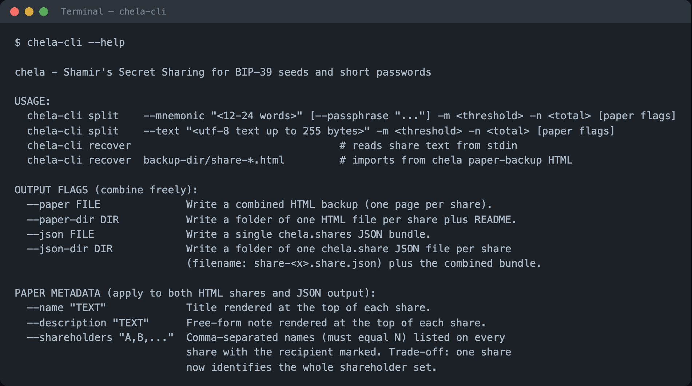
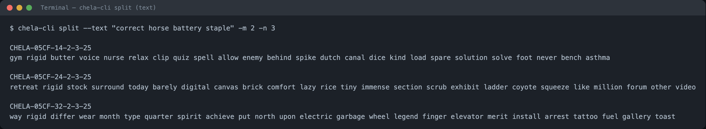
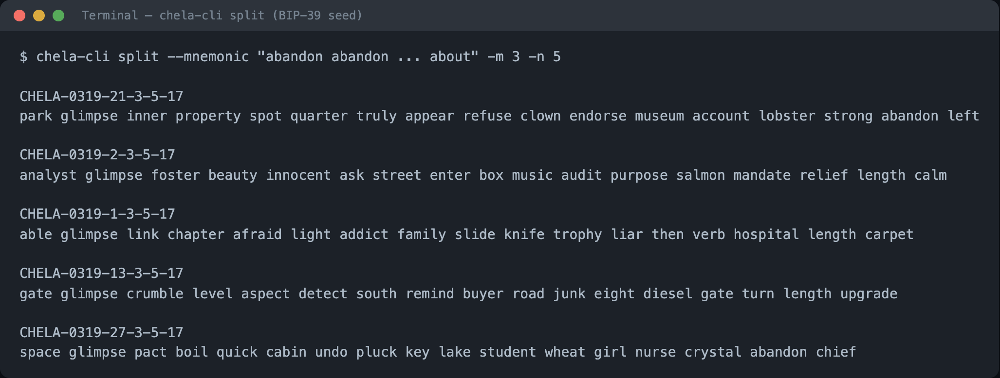
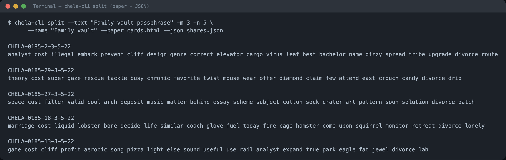
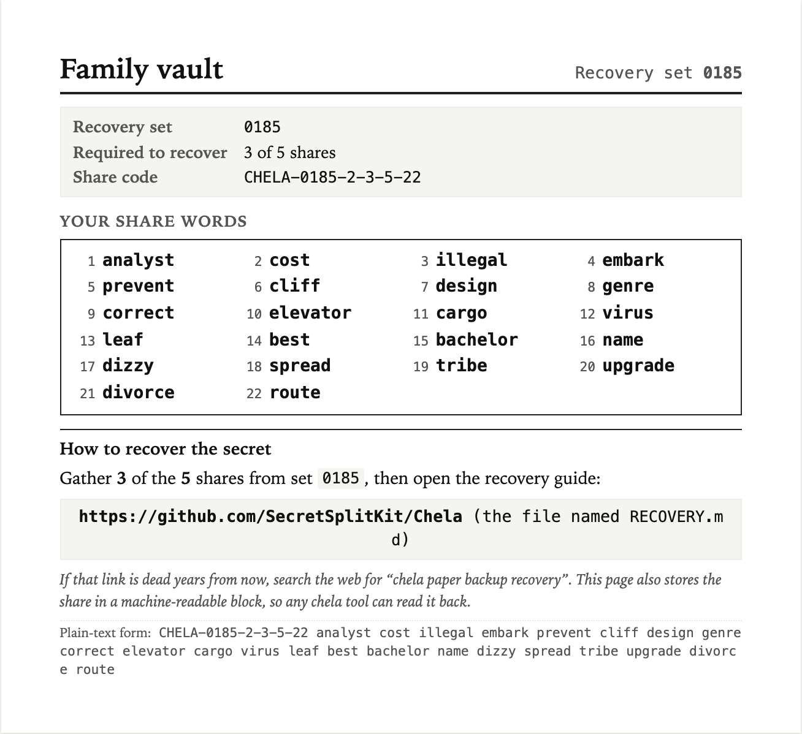

Splitting on the command line
chela-cli is the scriptable interface: you pass flags, it prints
shares. It does one split per run and never prompts, so it drops cleanly into
shell scripts. This page covers splitting a secret; to put it back together, see
recovery on the command line. Prefer to be walked
through the choices? Use the terminal wizard. Want
nothing installed? Use the website. All three produce
the exact same shares.
See the options
Run it with no arguments, or --help, to print the full usage. There
are two verbs, split and recover; the rest is flags.

chela-cli --help - the two verbs and the output flags.Split a text password
Pass the secret with --text, the threshold with -m, and
the total with -n. This makes a 2-of-3 split: three shares, any two of
which recover the secret.
chela-cli split --text "correct horse battery staple" -m 2 -n 3
Each share prints as a short header line plus a list of BIP-39 words. The header
(CHELA-...) names the recovery set, this share's coordinate, and the
rule; the words carry everything needed to recover, so a share is complete on its
own piece of paper. The share format breaks the
words down field by field.

Split a wallet seed
For a BIP-39 wallet seed, pass the words with --mnemonic (and
--passphrase if your wallet uses one). chela checks the mnemonic's own
checksum before splitting, so a mistyped seed is caught up front.
chela-cli split --mnemonic "abandon abandon abandon abandon abandon abandon \
abandon abandon abandon abandon abandon about" -m 3 -n 5
Save printable and machine-readable backups
Printing to the terminal is fine for a quick split, but for real backups add output
flags. --paper writes a print-ready HTML page (one share per sheet);
--json writes a machine-readable bundle any chela tool can read back.
--name and --shareholders label the printout.
chela-cli split --text "correct horse battery staple" -m 2 -n 3 \
--paper backup.html --json backup.json \
--name "Bitcoin cold wallet" --shareholders "Alice,Bob,Carol"
The paper backup prints each share on its own page, words large enough to read and re-type, with a recovery pointer and a machine-readable copy of the share for tools.

Next steps
You have shares. To put the secret back together, see recovery on the command line. The same split also works in the terminal wizard and the website, and the exact wire format is in SPEC.md.